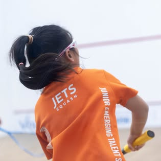
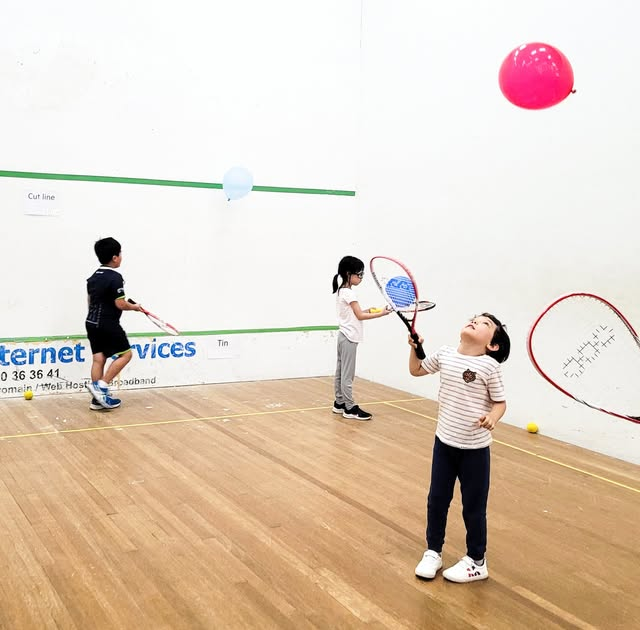
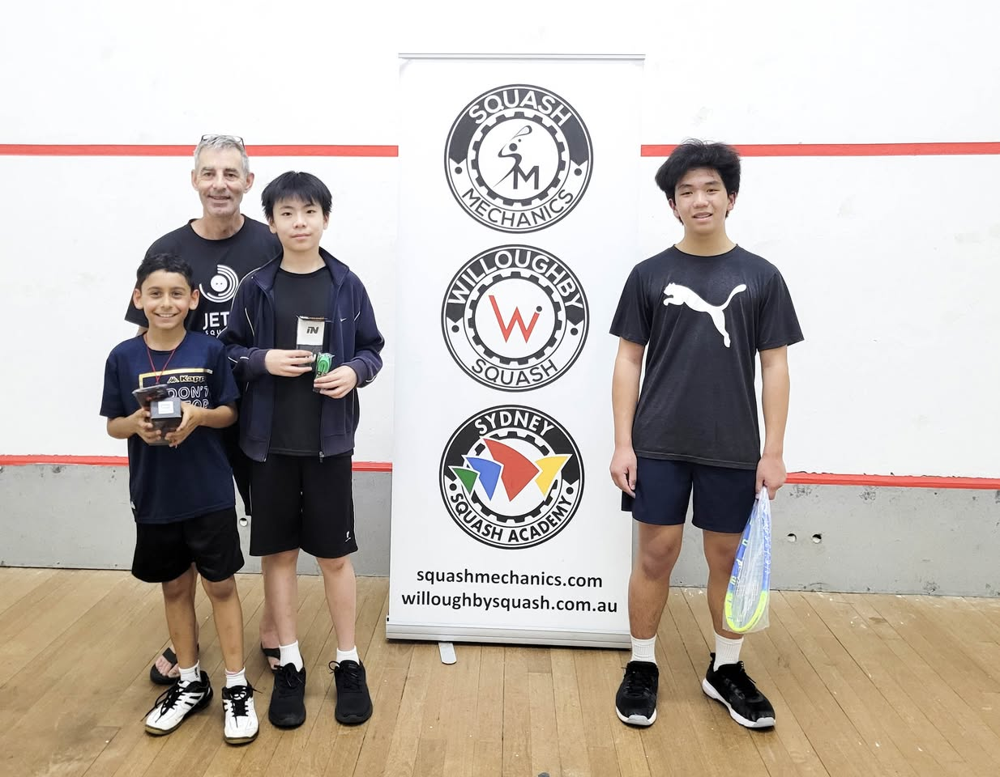
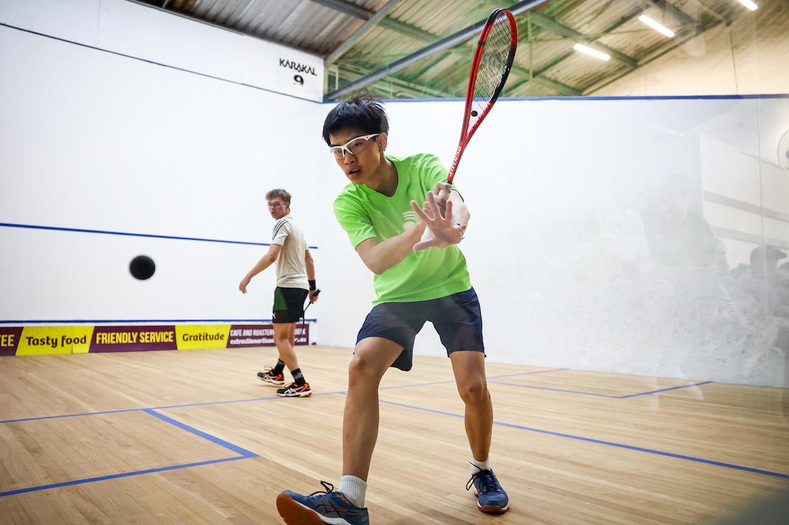
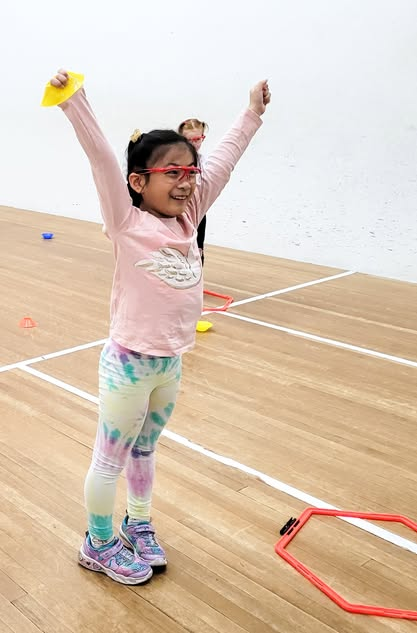
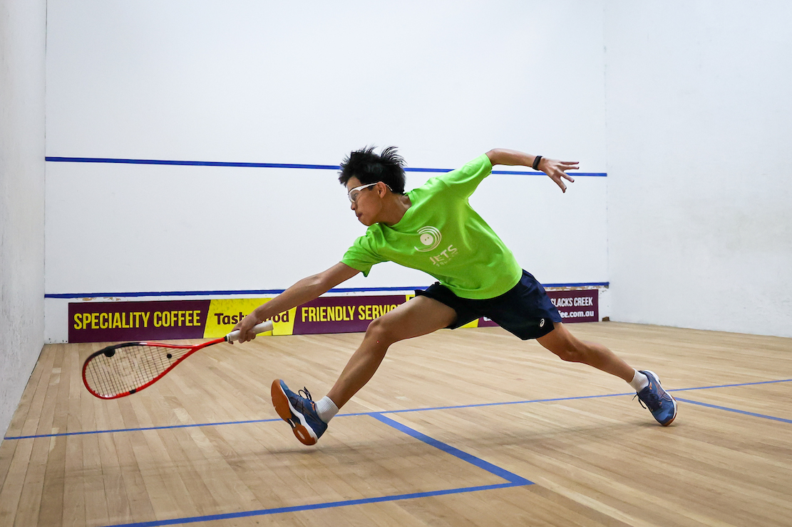
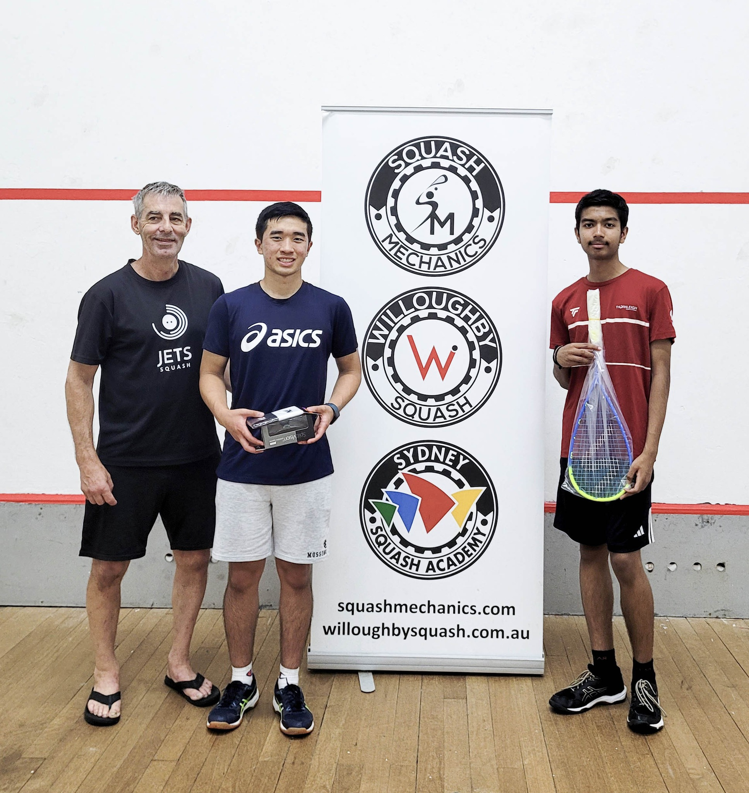
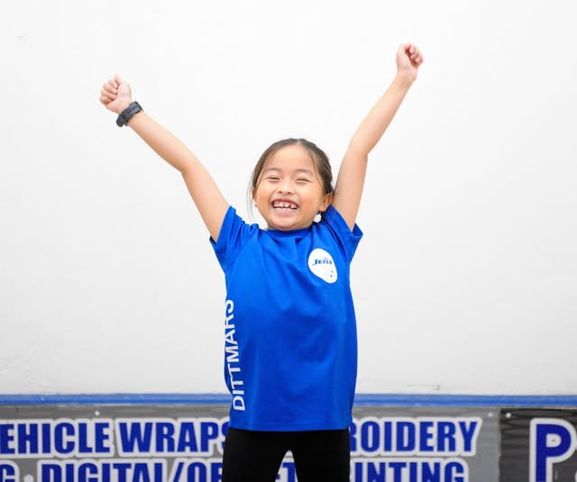
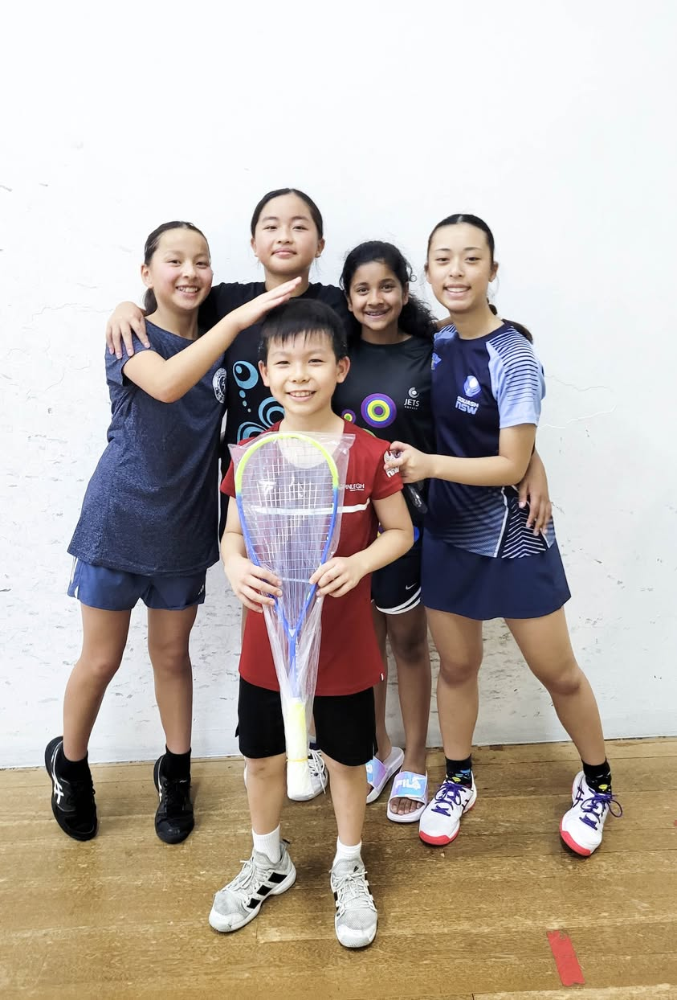

Where Sydney's Future Squash Stars Begin
Fun-first junior squash development in Marsfield
Come Try a Session
7 Courts
at MAASH Sports & Fitness
Monthly Comps
Skill-based competitions every month
All Welcome
Every age, every level
ABOUT US
Growing the Game, One Kid at a Time
JETS Squash is a grassroots squash development program dedicated to nurturing junior talent in Sydney. Built on a fun-first philosophy, we believe every child deserves the chance to discover the joy of squash — regardless of experience or ability. Founded by Geoff and Yan, JETS runs programs at MAASH Sports & Fitness in Marsfield, offering a welcoming and energetic environment for players of all backgrounds.
Learn More About Us
PROGRAMS
What We Offer



Our Community




